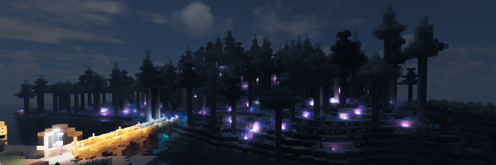

V1 - La République Socialiste de Palganie
24 août 2020 - 17 juillet 2021


Version : 1.16.5
Vidéo d'installation de la map en utilisant le logiciel 7zip
Pour les adeptes des petites bouffées de nostalgie, voici les anciennes maps des anciennes versions du serveur Palgania !
Elles sont assez conséquentes en taille (~ 5-15 Go), donc prenez en compte le temps de téléchargement qui peut être long, et considérez aussi qu'elles vont vite remplir votre disque dur !
Chaque map est accompagnée de la version de Minecraft recommandée pour la charger (il peut y avoir notamment des bugs de datapack si vous les chargez dans la mauvaise version).
24 août 2020 - 17 juillet 2021
Version : 1.16.5
Vidéo d'installation de la map en utilisant le logiciel 7zip
22 décembre 2021 - 17 juin 2022

Version : 1.18.1
lumahell, le 21 mai 2022